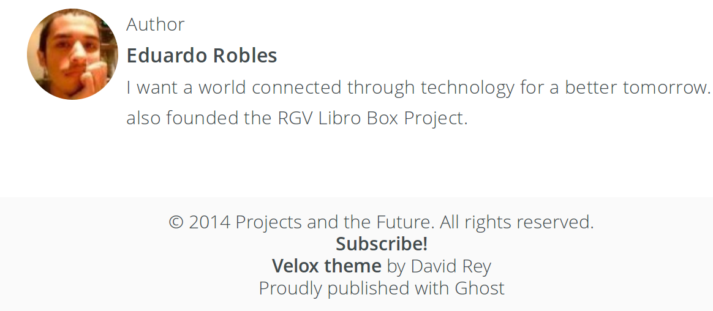

Posted in ghost, rss, hacks, theme
Fixing RSS on Velox theme
In the last post I got Ghost and Github pages setup. It is working great but I quickly stumbled upon a tiny problem. There was no direct way to view my RSS feed.
So I dug around a bit and learned how RSS works on Ghost blogs. Basically there is a some code on the default theme (casper) for Ghost that control the RSS functions. Here is what I found when I dug in the code
*on default.hbs, casper theme
<a class="subscribe icon-feed" href="{{@blog.url}}/rss/"><span class="tooltip">Subscribe!</span></a> <div class="inner">
The important part in this code is...
<a class="subscribe icon-feed" href="{{@blog.url}}/rss/">
Pay close attention to the part 'href="{{@blog.url}}/rss/", this bit of code is what produces your blog's RSS feed. The hack is simple just add this code to your theme's default.hbs with any of your modifications.
My final code looked this...
<h5 class="text book small"><a href="{{@blog.url}}/rss/" target="_blank" class="text bold">Subscribe!</a></h5>
I moved things around to match the Velox theme footer which is where I placed my RSS link (Subscribe!).

Well I hope you found this tutorial helpful because I know RSS is essential for some users.